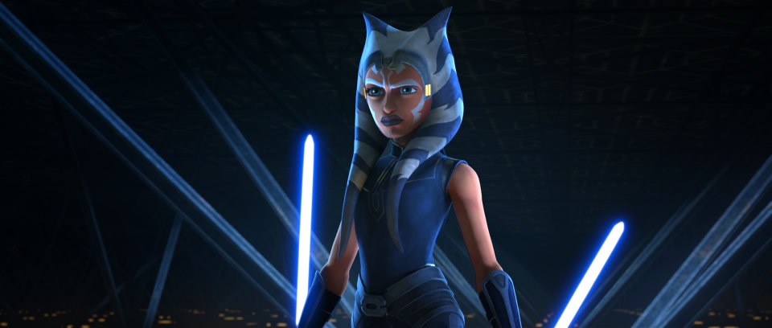

Поэтому напомню для краткости:
Милая вежливая девушка Катара | Маленькая слепая девочка Тоф |
|---|---|
 |  |
Из характеристики на джедая-расстригу:
Истинная тогрутка.
Характер: прямолинейная жопа. Пламенный борец за добро и справедливость. С товарищами по работе поддерживает беспощадные отношения. Любит говорить всем правду в глаза, отчего все страдают.
Отличная спортсменка, обладает характерными для стайных ночных хищников зрением, слухом, и способностью без команды не выёживаться.
Замечена в порочащих связях с фрилансерами в области оптимизации таможенных запретов при транспортных операциях.
Многие помнят (или, точнее говоря, рады бы и забыть) однажды приведённые мною иллюстрации того, во что нетфликс превратил девочек из мультсериала "Аватар".
Милая вежливая девушка Катара | Маленькая слепая девочка Тоф |
|---|---|
| |
Посмотрим же теперь, как выглядели юные супергероини всего совсем ничего назад, когда мыши-мутанты только-только начинали захватывать галактику очень, очень далеко отсюда.
Перед нами Асока Тано, юная представительница расы ночных хищников, не имеющих наружного уха, и использующих вместо него пористые рога (об эту природную особенность Асоки регулярно спотыкались злодеи, пытавшиеся надрать ей уши):

Как видим, перед нами совершенно обычная рогатая девушка в засранной майке. Даже довольно костлявая (по слухам, её хотели сделать ещё более костлявой, но тут вмешался старик Лукас, приказавший оставить в девушке хоть что-нибудь человеческое). Никакого бугрения бицепсов, трицепсов, и прочих мышц на жопе Бивиса. И, однако же, одна только её бровь сулит нарушителю трудовой дисциплины и норм социалистического общежития больше пиздюлей, чем все нетфликсовы груды мышц. Так сказать, не лук, но меч несёт эта бровь супостату.
Вот он, знак — чудесную тебя
Встретить, верно, должен нынче я:
Зачесалась бровь —
И с левой стороны, —
С той, где лук всегда носить должны.
По мысли поэта, лук (древнее кинетическое оружие) символизирует свидание, поскольку его концы связаны; бровь символизирует лук; ну а "лево" символизирует известно что.
На этом, как говорил коллега Ф. вечером трудового дня на картошке, я утомился и силы мои иссякли. Некоторые другие аспекты рогатой девушки будут рассмотрены позже.